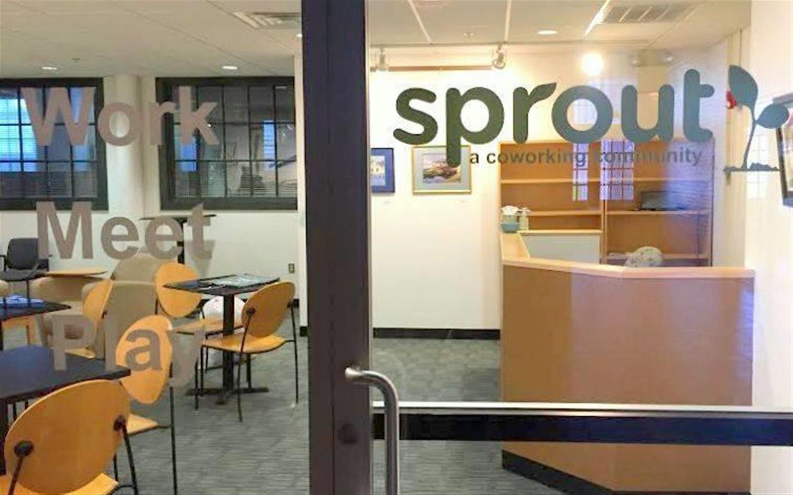

My Educational and Professional Journey
Fairfield University
This is the first stop on my educational and Professional Journey. I started this Journey fall semester of 2009 as a Biology Major. My original plan was to apply for Medical School and become a Physician. After four brutal years of being a Biology major, I graduated with a bachelors of Science degree in Biology in May of 2013. However, along that road I realized that Medical school was not for me. I could not handle that level of dedication and workload that is involved with pursuing a Medical degree. Then I made a decision to continue to pursue a career in healthcare but not as a Physician. Beside being miserable as a Biology major, I did enjoy my time there. I made some lasting friendships, sang in glee club, joined an acapella group, and was able to travel to different countries because of FU. I traveled to italy and South Korea while I was student at Fairfield.
American Red Cross- Boston
The summer before my senior year of college, I obtained my certificate as a Certified Nursing Assistant. I believed that by obtaining this certificate , I could begin to work in a hospital setting to get exposure to the career that I may perhaps pursue. Going through this program I learned what it took to be a professional in the healthcare field no matter what level of care you are providing. Also, I learned that I could stomach a job like nursing with being in contact with bodily fluids and other undesirable things that may happen in that setting. Our in the field work involved a Nursing home in Quincy,MA. There we took care of demetia patients and dealt with end of life care. It was tough work physically and mentally due to the condition of the patients. It gave us a good dose of reality. Even though we experienced this sort of work, I was still determined to enter the healthcare field.
Beth Israel Deaconess Medical Center
After graduating in 2013, I immediately began to search for employment. I tried many hospitals in my area and in Boston. I had no luck for about two months until my neighbor and family friend offered to help me out. He had a friend who worked at Beth Israel Deaconess Medical Center and encouraged me to apply there and give it a shot. By the end of August that year I was employed at Beth Israel as a per diem Patient Care Technician or Certified Nursing Assistant. I felt lucky to even have employment in such a short time. Currently I still work there per diem while I figure out what i want to do with my life.
Quincy College
After deciding to pursue a career as a PA or Physician's Assistant, there were classes I needed to do in order to apply. I took about 5 courses here part time because it was the most affordable option for me. Along the way however i decided not to pursue a career as PA due to some of the requirments needed to be a contender . So my next step was to pursue a career as a Nurse Practitioner. That was the next logical step since I already had hospital experience in the nursing field and by this time I have completed all the classes i would need to apply. Luckily the courses I took while trying to pursue a PA degree applied to the NP application as well. I applied for the Direct entry program at Mass General Hospital. Unfortunately, I was not accpeted to the program. That was when I decided to pursue my interest in computer science. I have always had an inkling of an interest in that field but never had an oppurtunity to try. This began my journey towards Launch code.


Sprout Rhode Island and Launch Code
I became involved with Sprout through my girlfriend, Jesenia Cruz, who lives in Rhode Island and also worked there. I have been working there since February of 2015. That is actually how i learned about Launch Code. I met Shandi through Sprout because Launch code works out of Sprout. This is when I realized that it was my chance to try out computer science and programming. Although I was unsuccessful with cs50x through Launch code, I signed up for LC101 and have since then finished Unit 1 and am currently working on Unit 2 material. I have high hopes for my time here at LC and hope to do well so that I can get an internship.
Lyft-alternative taxi
In my spare time, I earn some extra cash driving for lyft. I started around December of 2016 and really enjoy the fact that I can provide this kind of service to people. I have had a great experience so far and am still learning the ins and outs of how things work. So far it has been a great company to work for and I will continue as long as I can with lyft to earn some extra cash.